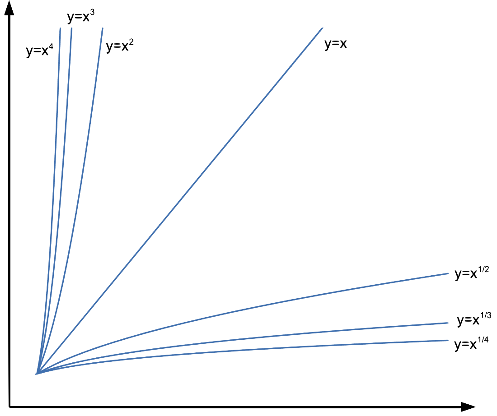
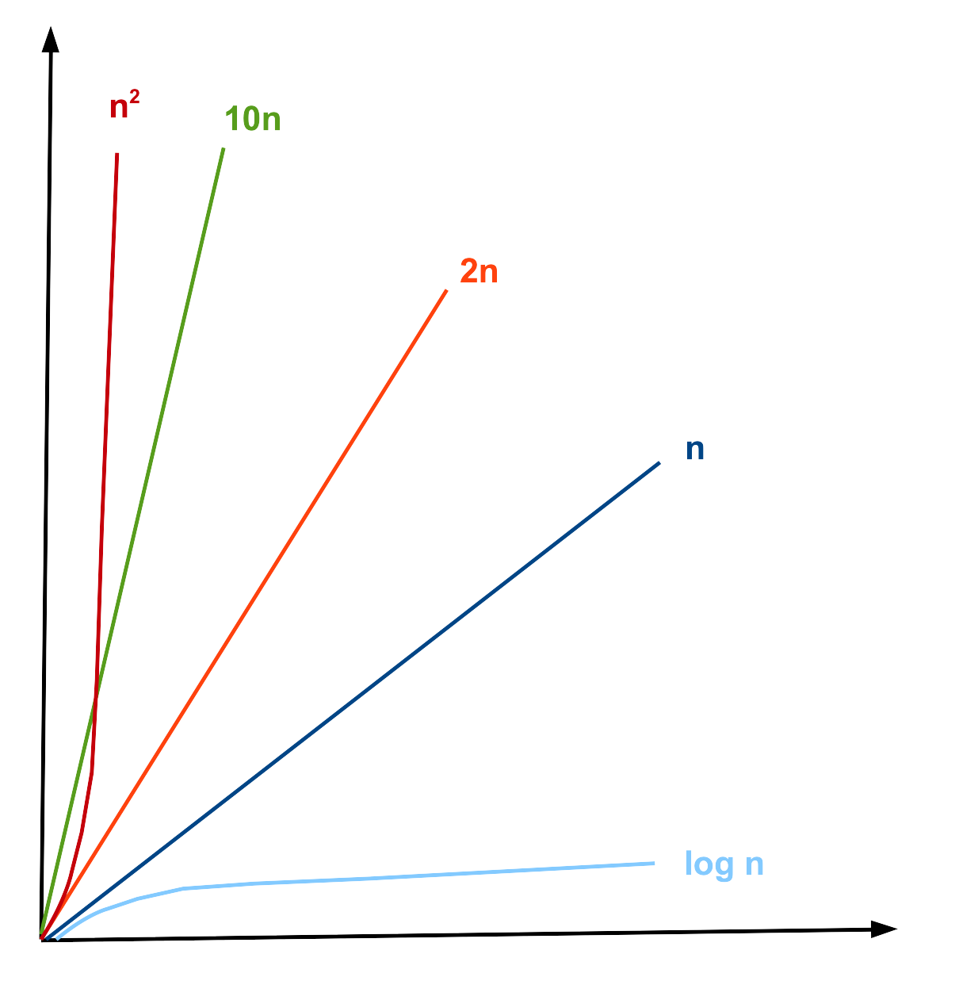
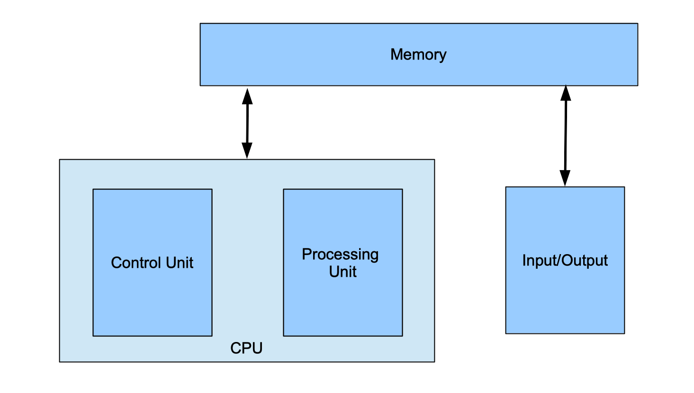

Module 11: A Working Computer
Big O
Big O notation is a mathematical tool used to describe the growth rate of a function as its input becomes very large. In other words, it captures how quickly a function grows in the long run, ignoring small details. Formally, we say f(n) ∈ O(g(n)) if there are constants c ∈ ℝ+ c > 0 and n0 ∈ ℕ such that f(n) ≤ c · g(n) for all n ≥ n0. The capital "O" is derived from the German word "Ordnung" for order, referring to the order of approximation.

When comparing two power functions, look only at their exponents. For example: n3 grows faster than n2, so n2 ∈ O(n3). So if r < s, then xr ∈ O(xr).

Common growth rates (from slowest to fastest):

| O(1) < O(log n) < O(n) < O(n log n) < O(n2) < O(2n) < O(n!) |
You don't need to memorize this list; a formula sheet will be provided to you at all assessments during the course.
An informal approximation to check if f(n) ∈ O(g(n)) when g(n) is a one-term function with no constants is:
- If f(n) is a sum, drop all low-order terms
- If there are constants multiplying the dominant term, drop them too
- The remaining term gives you the big O
| 5n log2 n + 2n4 + 1000 | original function f(n) |
| 2n4 | eliminating low-order terms |
| n4 | eliminating constant |
| n4 | new function g(n) |
| f(n) ∈ O(g(n)) ⇒ 5n log2 n + 2n4 + 1000 ∈ O(n4) | |
Big O proofs
The formal definition of Big-O is expressed using the following predicate.
∃c ∈ ℝ+, ∃n0 ∈ ℕ, ∀n ∈ ℕ, n ≥ n0 → f(n) ≤ c · g(n)
When proving a statement about Big-O, we can apply the same strategy used in Direct Proofs (Module 7). Specifically, we should examine the quantifiers associated with each variable to determine their role in the proof and use our understanding of implication to decide what assumptions to make.
Another key idea is that our conclusion involves an inequality rather than an equality. This provides flexibility in manipulating the functions. Since we do not need f(n) to be exactly equal to g(n), we can instead make f(n) larger in a controlled way, creating a function that bounds f(n) from above; the role we want g(n) to play. For example, if we know 2x=y for natural numbers x and y, then adding 1 to the right-hand side gives 2x < y+1. We use this same kind of reasoning when constructing proofs involving Big-O. We will use this idea when doing our proof:
- Start by choosing c and n0. Initially, you may not know the exact values, but you'll refine them as you work through the proof.
- "There exists" (c, n0) means we must choose specific values.
- "For all" (n) means our reasoning must hold for every n.
- Assume the left-hand side of the implication, stating that n ≥ n0
- State that f (n) = f (n), never assume f(n) ≤ c · g(n) at the start. That's what we're trying to prove.
- Since we only need f(n) to be bounded above, we can replace it with a bigger (but simpler) expression, making it easier to compare to g(n).
Indicate the value of n0 at the beginning of the proof. This value should be the largest lower bound required by the justified steps. Keep each algebraic step small and clearly justified, unless the reasoning is immediately obvious. Always check that each step holds for all values of n in the specified range.
|
Prove that f(n) ∈ O(g(n)), for f(n) = 15n + 18 and g(n) = 10n5 + 6n. |
|
Proof:
Choose c = 3 and n0 = 1
f(n) = 15n + 18 Therefore, f(n) ≤ 3 · g(n), for n ≥ 1 ◼ |
|
Although the proof begins by fixing the constants c=3 and n0=1, these values are actually determined only after completing the argument. We start with the function f(n) = 15n+18. The goal is to transform it into a form that can be directly compared with g(n)=10n5+6n. To do this, observe that for natural numbers n, multiplying n by n4 produces a value greater than or equal to n. Hence, 15n ≤ 15n5. Similarly, when n ≥ 1, then 18 ≤ 18n. At this stage, the expression has a form similar to g(n). Factoring, we get 15n5+18n = 3(5n5+6n). The term inside the parentheses is exactly g(n). Therefore, f(n) ≤ 3g(n), which establishes c=3. Finally, we verify the range of n for which all steps are valid. Although some steps remain true when n=0, the inequalities involving 18≤18n hold only when n ≥ 1. Thus, we must take n0=1 as the lower bound of n. |
Von-Neumann Architecture
The von Neumann architecture is a foundational computer design model where both program instructions and data share the same memory. This model features a Central Processing Unit (CPU) with an Arithmetic Logic Unit (ALU) and control unit, a memory unit, and input/output mechanisms, all connected by buses.

Central Processing Unit (CPU)
It is composed of three main parts:
-
Arithmetic Logic Unit (ALU): Performs arithmetic (addition, subtraction, etc.) and logic (AND, OR, comparisons). Each operation is identified by an opcode. The ALU can also detect overflow or other status conditions.
-
Control Unit: Directs the flow of execution. It fetches instructions from memory and manages other components. It contains the Program Counter (PC), which holds the address of the next instruction.
-
Registers: Small, ultra-fast storage inside the CPU for data being used immediately. Because registers are limited in size, the CPU frequently reads from and writes to memory.
Input/Output (I/O) Mechanisms
Provide communication between the computer and the outside world. This includes any type of data that can be given to the computer, including the keyboard, the mouse, microphones, and touchscreens, and any type of data the computer can give us back, including the screen, speaker, and vibration motors.
Memory Unit
Memory stores both the program instructions and the data that the CPU processes. It is organized into a series of memory locations, similar to a list or array, where each location holds a fixed number of bits; most commonly 8 bits (1 byte). Values that require more than 8 bits are stored across multiple consecutive memory locations.
Each location is identified by an index called an address, while the contents of that location represent the data. Both addresses and data are represented in binary. In a 32-bit computer, addresses are 32 bits long, allowing for 2<32 unique addresses (about 4 GB of addressable memory). In contrast, a 64-bit computer uses 64-bit addresses, providing up to 264 unique addresses (about 18 exabytes, or 18 EB∼1.8·1010 GB).

In this example, the address 0x1000 in this memory stores 0x48 (or 01001000 in binary), which represents the character H in ASCII code and the address 0x1001 stores 0x69 (or 01101001 in binary), which represents the character i in ASCII code. The address 0x1002 has the integer 42108 represented as a 32-bit unsigned integer as 0x0000A4AC using 4 memory spaces. Finally, the address 0x1006 has the integer -5 represented as a 8-bit unsigned integer as 0xFB using only 1 memory space.
Machine code
Computers must translate programming languages into binary in order to execute them. This translation is typically handled by a compiler, which converts source code into machine code or assembly language; forms that can be directly interpreted as binary by the computer. In the early days of computing, programmers wrote directly in machine or assembly language, which is difficult to read and relies heavily on symbols rather than English words.
Each processor has its own unique set of instructions. Programmers often rely on manuals that specify which instructions are supported, their names, and the required order of their arguments. The examples in this section illustrate a small subset of the IA-32 (Intel 32-bit) instruction set architecture.
In this architeture, each instruction type is identified by a 4-bit sequence. The following 4 bits may then take on different meanings depending on the instruction type. For readability, these binary sequences are typically written in hexadecimal, where each digit represents exactly 4 bits. The specific encoding and interpretation of these instructions are determined by the processor's designers and cannot be altered.
Moves
These are instructions that move data to and from registers.
Example: irmovl 0xA2, %edx
This instruction stores a constant (A2 or 162 in decimal) in a register (called %edx, register names are given by the processor and cannot be changed).
In hexadecimal this instruction is represented as 30 F2 00 00 00 A2:
| 3 | means this is a move instruction |
| 0 | means we are moving a constant to a register |
| F | not used, so it always F by default |
| 2 | means register %edx |
| 000000A2 | is the constant to be stored |
Operations
These instructions calculate arithmetic and logic operations between constants and/or values in the registers.
Example: addl %eax, %ebx
This instruction adds its arguments, so it does ebx= eax+ebx (the order and number of the terms is given by the processor and cannot be changed, so it is not possible to do ecx= eax+ebx, for example)
In hexadecimal this instruction is represented as 60 03:
| 6 | means this is an arithmetic or logical operation instruction |
| 0 | means the operation is an addition |
| 0 | means register %eax |
| 3 | means register %ebx |
Branches or Jumps
These instructions modify the order in which instructions are executed, enabling loops and conditional behavior. Unlike high-level languages, machine code does not have constructs such as repeat, for, while, if, or else. Instead, these instructions change the value of the program counter (PC) based on the result of the previous arithmetic or logical operation.
Example: jne label
This instruction (short for "jump if not equal") transfers execution to the instruction at the specified label if the result of the previous operation was not zero. If the result was zero, execution continues with the next instruction in sequence.
In hexadecimal this instruction is represented as 74 00 00 CA FE:
| 7 | means this is a jump instruction |
| 4 | means the condition is "not equal to 0" |
| 0000CAFE | is the value of the label (the address of the instruction to be executed) |
Execution stages
The CPU divides the execution into 5 stages:
- Fetch/Decode: read instruction and decide on new PC value
- Execute: read values from registers and use the ALU to perform computations
- Memory: read data from or write data to memory
- Write-back: store value(s) into register(s).
- PC update: store the new PC value.
For each instruction the computer will execute each step, until the expect result happens.
For irmovl 0xA2, %edx
- Fetch/Decode: read 30F2000000A2 and update PC by 6, since the instruction has 6 bytes
- Execute: determine the contant is 000000A2
- Memory: no action
- Write-back: store 000000A2 in register %edx
- PC update: update PC to execute the next instruction that is 6 bytes ahead in the memory
For addl %eax, %ebx
- Fetch/Decode: read 6003 and update PC by 2, since the instruction has 2 bytes
- Execute: compute %eax+%ebx
- Memory: no action
- Write-back: store the result in register %ebx
- PC update: update PC to execute the next instruction that is 2 bytes ahead in the memory
For jne label
- Fetch/Decode: read 740000CAFE and update PC by 5, since the instruction has 5 bytes
- Execute: compare last operation result with 0
- Memory: no action
- Write-back: no action
- PC update: if the last result was 0, the new value of PC is 5 bytes ahead, if it was not equal to 0, the next value of PC is 0000CAFE
Sample Program
Let's see how this sample program is executed:
|
label: irmovl 0x0A, %eax
# Load 10 into EAX irmovl 0x05, %ebx # Load 5 into EBX addl %ebx, %eax # EAX = EAX + EBX jne label # Jump to label if != 0 halt |
Let's assume that it is stored in the memory in the following way:
| irmovl 0x0A, %eax | irmovl 0x05, %ebx | addl %ebx, %eax | jne label | halt | |||||||||||||||
| 30F00000000A | 30F300000005 | 6030 | 7400000200 | 00 | |||||||||||||||
| 30 | F0 | 00 | 00 | 00 | 0A | 30 | F3 | 00 | 00 | 00 | 05 | 60 | 30 | 74 | 00 | 00 | 02 | 00 | 00 |
| 0x200 | 0x201 | 0x202 | 0x203 | 0x204 | 0x205 | 0x206 | 0x207 | 0x208 | 0x209 | 0x20A | 0x20B | 0x20C | 0x20D | 0x20E | 0x20F | 0x210 | 0x211 | 0x212 | 0x213 |
The program starts with PC = 0x200 and executes the first irmovl instruction, which loads the value 10 into register %eax. The PC is then updated to 0x206 because this instruction is 6 bytes long. Next, the program executes the second irmovl instruction located at this memory address, which loads the value 5 into register %ebx and updates PC to 0x20C, as this instruction is also 6 bytes long.
The instruction at PC = 0x20C is addl. This instruction adds %ebx to %eax, updating %eax with the value 10 + 5 = 15, and updates PC to 0x20E (the addl instruction is 2 bytes).
The instruction at PC = 0x20E is a conditional jump. It checks whether %eax is not equal to 0. Since the last instruction result was 15, the jump is not taken, and PC is updated to 0x213. Finally, the halt instruction stops program execution.
This program performs one addition and halts because the result of the addition was positive. If the sum of %eax and %ebx had been 0, the jump would have been taken, and PC would be updated to the address of the label, which is 0x200. At that memory location is the first instruction, which would then execute again, creating a loop.
Read More
Epp, Susanna. Discrete Mathematics with Applications.
5th edition: 11.2
4th edition: 11.2
3rd edition: 9.2